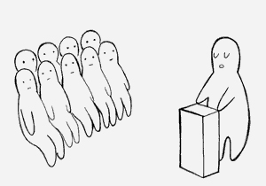
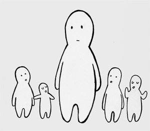
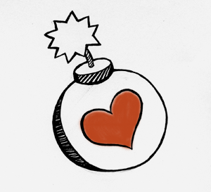

Adopt Allen Gunn ("Gunner's") model for group facilitation, informed by the civil-disobedience training of the Ruckus Society and other left-wing organizing and consensus-based models. Gunner says:
Step 3a: "A bunch of people sitting and listening to one person talk is one step below a crime against humanity." Minimize plenary sessions to "take the head off the event."
Step 3b: “Focus on respect” for all participants, volunteers, and organizers. “If you are the most knowledgeable your job is to do the most listening.”
Step 3c: “Focus on jargon” to make the dialogue as accessible as possible. Make translation available when participants speak different languages.
Step 3d: “Love-bomb” participants whenever appropriate with clapping and cheering. Conversely, make one person, not someone with direct logistical responsibility, a designated “lightning rod” for complaints so negative energy is channeled constructively.
How you'll know when you succeeded: feedback from participants, such as :
* chechar chess todavía en estado de shock cultural y admiración profunda por el #Drumbeat. y eso que apenas he tenido tiempo de pisarlo. mañana, a tope :-) (I'm still in a state of culture shock and profound admiration for Drumbeat. And I still haven't had time to take the first step. Tomorrow, the toe :-)
* JeremiePat Jérémie Patonnier Cette première journée #drumbeat a été bien dense et bien épuisante (exhausting)... par contre, j'ai toujours du mal à comprendre le but de tous ça ! (The first day of Drumbeat was really dense & really exhausting; I'm still at a loss to understand the point of all this!)
* Too many good sessions but i have only one corporeal presence #drumhelp #humancloning 23 hours ago
* kwissoker: RT @sveinns: I didn't realise the magnitude of what was happening at #drumbeat. I am officially awestruck, and in utter information overload.
* en hastac: Yes!!! RT @li_ar: What did you learn yesterday? I've learnt hackers care about education. Does education care about hackers? - about an hour ago
{From participant evaluations}
"Want MOAR! Don't make me wait for a full year before the next one!"
artists + technology + academics = awesome
We practice brain sharing and collaborative hacking
Very intense, enlightening, awesome
It's brilliant to see the connections made between different worlds ADHD (in a good way!)
"Do it again! Go forth and prosper. This is such a better model for collaboration and networking compared with conferencing"
Drumbeat is inspiring in a practical way. Not airy-fairy theories and ideas but real things you can do to affect change.
A FRIGGIN GOOD START